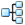

|
|
Project Table — Property Toolbar |
This toolbar has buttons for performing actions on the columns in the Project Table. These actions are also available from the Property menu.
 |
Columns Set column order, data precision, and widths. The menu provides selection of Reorder Property Columns, which opens the Reorder Properties dialog box; Decimal Places, which opens the Set Decimal Places dialog box; and options for fitting the column width. |
|  | Tree Display a tree view of the properties in the Project Table. Opens the Property Tree panel, which is docked to the right of the properties in the table. Menu equivalent: Property → Tree. |
| Show Show properties in the Project Table. The menu provides the following selection:
|
|
| 2D Structure Display 2D structures in the Project Table as the third column, labeled 2D Structure. Structures with more than a specified number of atoms (default 200) are not displayed. For protein-ligand complexes, the ligand is displayed, with an icon in the top right to indicate that a protein is present. The ligand is detected with the settings in the Ligand Detection Settings dialog box. The 2D structure height slider is shown below the table when the column is displayed. You can control the appearance of the structures and the size limit in the 2D structure - Display tab of the Preferences panel. Menu equivalent: Property → Show → Show 2D Structure. |
|
| Show Family Show only properties from the selected property family. Choose the family from the menu, which is dynamically constructed from the properties present in the Project Table. Menu equivalent: Property → Show Only Family. |
|
| Hide Family Hide properties from the selected family. Choose the family from the submenu, which is dynamically constructed from the properties present in the Project Table. Menu equivalent: Property → Hide Family. |
|